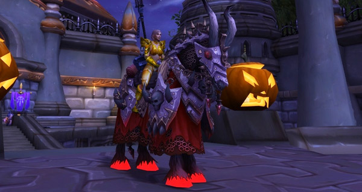

L'extension Légion était en soi une très bonne extension pour tous les joueurs (car il n'est pas compliqué de faire mieux par rapport à Warlords of Draenor) mais surtout pour les collectionneurs de montures, puisqu'elle apporte avec elle plusieurs dizaines de nouveaux modèles ainsi que des moyens d'obtention originaux !
Les montures secrètes
Légion est la première extension a rapporté de nombreux secrets avec elle. Des énigmes, débutant simplement par un joueur trouvant un minuscule objet à une place inhabituelle dans la capitale... C'est ainsi que se sont formées des communautés de plus de 20 000 joueurs ( appelée le Discord des secrets) qui oeuvrent afin de résoudre toutes les énigmes, et c'est à eux que nous devons la découverte des trois montures suivantes
La creature des grands fonds
Tout a commencé par un joueur découvrant un orbe avec lequel il pouvait interagir, créant une animation ainsi qu'un message codé. En postant des messages sur le forum du jeu, des personnes se mirent à chercher également, pour réussir à trouver le deuxième orbe qui lui aussi renvoyait un message codé.
C'est ainsi qu'après avoir voyagé partout en Azeroth, décodé 12 messages et rassemblé plusieurs dizaines de milliers de joueurs que nous avons vu cette monture apparaitre en capitale, et se démocratiser.
Le ver énigmatique de l'esprit Le boss débloqué par la chasse aux énigmes
Le ver enigmatique de l'esprit
Cette monture, apparue dans les fichiers du jeu au second patch de Legion, a beaucoup fait parler d'elle. Les joueurs sont restés bloqués plusieurs jours sur une énigme, la numéro 7, de par sa difficulté. Après plus d'une semaine d'attente depuis le début de l'énigme, les joueurs ont finalement réussi à déceler l'emplacement de la monture en récompense finale : posée, dans un talus au bord d'une plage de Sombrivage.
Le ver énigmatique de l'esprit
Cauchemar lucide
Cette monture fut un peu le "bouquet final" des développeurs. Quasiment 20 énigmes, des endroits perdus au fin fond de grottes au large des côtes à explorer, un patron d'artisanat à obtenir avec un taux de 0.01% ... le Discord des secrets a mis quasiment 10 jours à terminer cette énigme, avec plus de 50 000 joueurs y participant.
Il fallait quelque fois chercher un levier dans le plus grand raid du jeu afin faire apparaitre tout un jeu de lumières et dessiner un motif, traduire avec des leviers un message codé en binaire à l'aide de compétences de mascottes ...
Cauchemar lucide Les empreintes de pas de la monture
Cette monture possède une aura assez unique puisque chaque trace de pas laisse un sabot de couleur pourpre sur le sol pendant quelques secondes, en plus de posséder une aura violette !
Les nouveaux modèles uniques
Le marchand fou et la Veuve noire
En plus des énigmes et autres objets inhabituels, les joueurs ont pu observer un personnage non-joueur avec des mécaniques assez étranges : tantôt présent pendant plusieurs minutes, tantôt abesents pendant des jours et vendant des marchandises excédant le million de po !
Ce dernier se nomme le Marchand Fou. Apparaissant toutes les 6h, il reste en place dans sa boutique pendant 15 minutes mais disparait dès que quelqu'un lui effectue un achat et vous propose un stock de marchandises aléatoires à chaque apparition. Parmi elle peut se trouver la fameuse Veuve noire pour la "modique" somme de 2 millions de po.
Le marchand fou sur les serveurs de test (ce qui explique les faibles prix)
Saumefond benthique
A côté de la capitale Dalaran (ville volante) flotte une petite île ainsi que ses occupants : l'Adjurateur Margoss. Ce dernier vous propose, en échange de 100 pièces d'une monnaie encore inconnue, d'acheter une monture qui ressemble vaguement à un saumon ayant ingéré trop d'OGM.
Comment obtenir cette monnaie? Il faut pêcher devant le lac devant l'Adjurateur Margoss pour avoir une chance (~2%) d'obtenir un objet spécial. En jetant cet objet dans l'eau, cette dernière devient comme enchantée en émettant de fines particules bleues pendant 2 minutes.
En pêchant dans cette eau spéciale, vous obtiendrez une pièce de cette monnaie par lancer réussi. Vous deviez ensuite simplement utiliser 300 de cette monnaie pour devenir le meilleur ami de l'adjurateur.
Cette méthode pouvant prendre plus de 20 minutes pour avoir 1 pièce, les joueurs ont trouvé une stratégie pour la contourner : pêcher en groupe de 40 personnes. L'eau enchantée apparaissant pour tout le monde, il était quasiment certain d'avoir en permanence un joueur possédant le fameux objet dans son inventaire.
Le fameux saumon Des joueurs pêchant en groupe raid L'emplacement de l'adjurateur Margoss
Le retour de Karazhan
Nous avons parlé du raid Karazhan dans la page des montures de l'extension Burning Crusade, ce raid fait son retour à l'extension Légion sous forme d'un donjon ! Plutôt considéré comme un "mega-donjon" à cause de sa longueur (quasiment 10 boss), ce dernier offrait la possibilité aux joueurs d'obtenir deux "nouvelles" montures.
En effet, la première n'est autre que Minuit 2.0, qui est enfaite une version remodélisée du Cheval de guerre embrasé que nous avons déjà présenté. Ce donjon possède aussi la particularité de renfermer un boss secret qui n'apparaissait que si le groupe appuyait sur des orbes réparties dans tout le donjon dans un ordre bien précis et en respectant un compte à rebours.

La wyrm incandescente
Nommé Plaie-de-nuit, ce boss très puissant possédait plusieurs attaques de zone vous tuant instantanément si vous n'étiez pas assez rapide pour esquiver, ce qui réservait d'abord cette monture à des joueurs bien équipés. La monture tombait forcément, et avec 5 personnes dans votre groupe, vous aviez donc 20% de chances de l'obtenir.